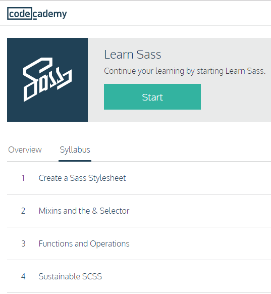
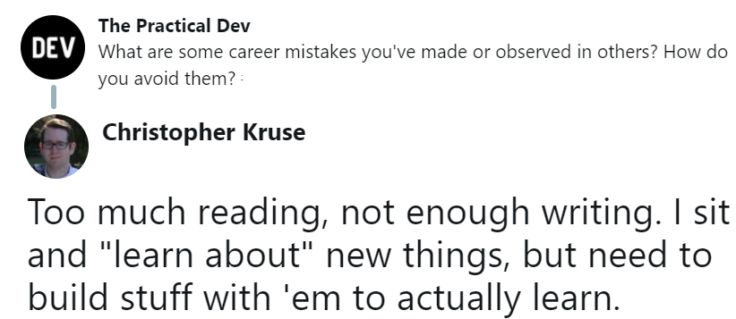
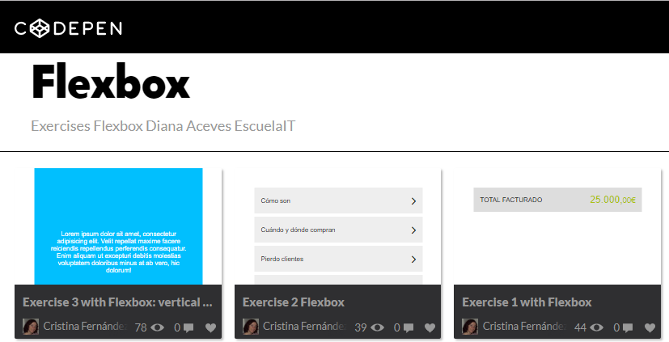
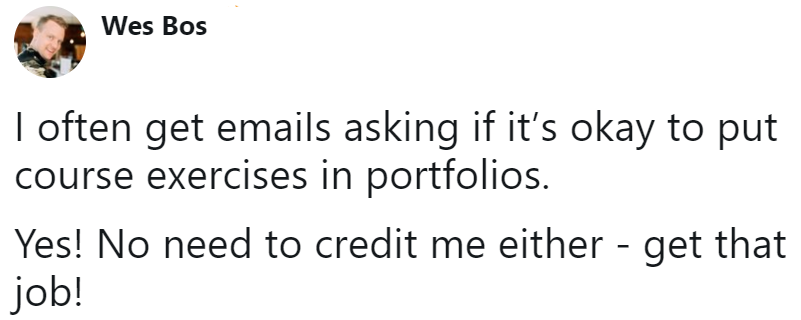
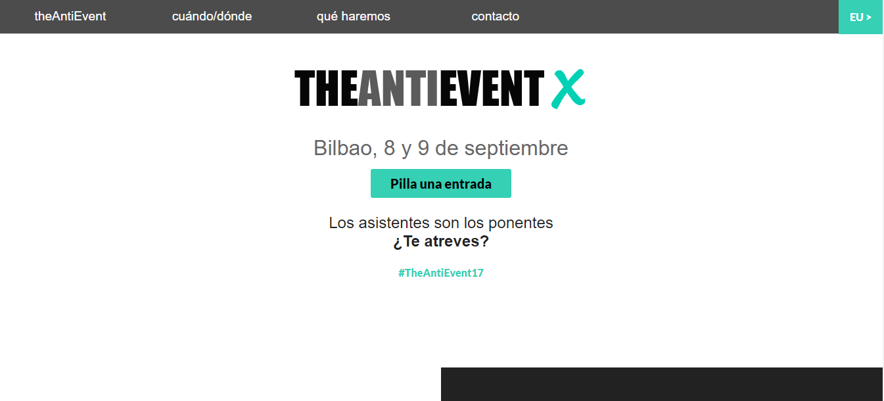
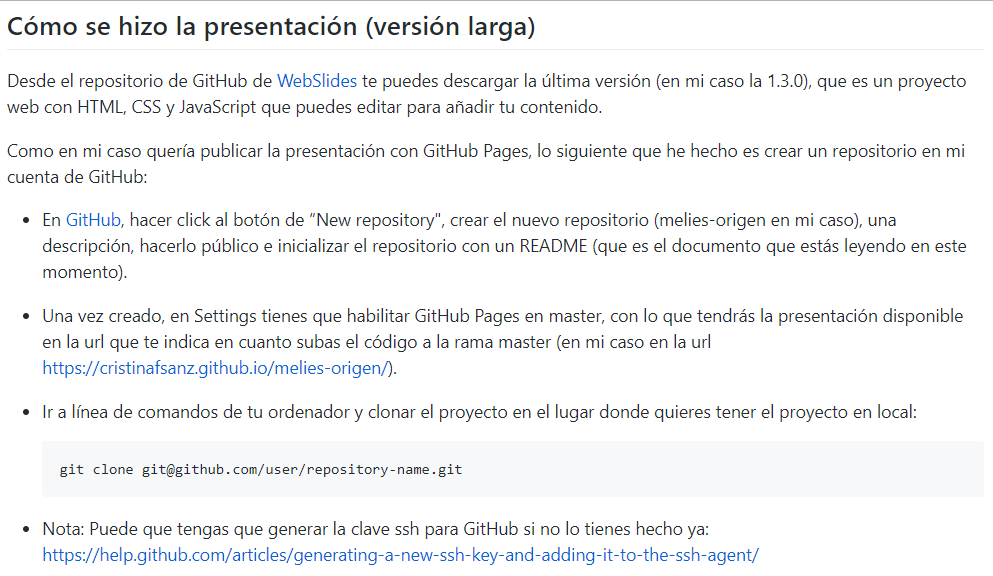

GitHub y el aprendizaje 📚
Épocas de "Cursitis"
Errores al aprender
Solución: Aprender haciendo
Curso Flexbox
¿Puedes publicarlos?
¿Dónde alojar tus experimentos?


GitHub + GitHub Pages
Crear cuenta GitHub

Crear repositorio

Subir el código
cd Projects
git clone git@github.com/user/repository.git
cd repository
git add .
git commit -m "Mensaje"
git push origin master
Habilitar GitHub Pages

Demo en GitHub Pages
Jotted: Resultado y código

Resultado

Ejemplos con GitHub Pages
GitHub Pages desde master


GitHub Pages desde /docs




Documentación
Conclusiones
- Practica lo que aprendes
- Documenta
- Publica código y demo
¡Gracias!
- Repo proyecto: https://github.com/cristinafsanz/github-pages
- Blog proyecto: https://melies-hugo.js.org
- Slides: https://cristinafsanz.github.io/slides/techshessions2017/30min
- @cristinafsanz
Créditos
- WebSlides es una solución open source creada por @jlantunez, @Belelros y @luissacristan. Si quieres saber más, ¡ponte en contacto!